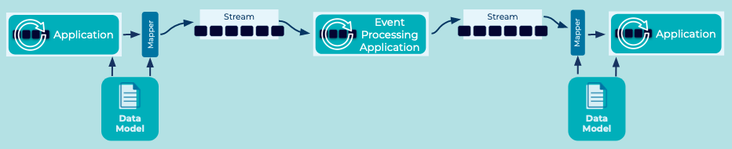

Event Mapper
Problem
How do I move data between an application’s internal data model (with domain objects) and an event streaming platform (with events) while keeping the two independent of each other?
Solution Pattern

Event Mappers provide independence between the application and the event streaming platform so that neither is aware of the other, and ideally not even of the event mapper itself.
Create (or use an existing) Event Mapper to map the Domain Model (or the application's internal data model) to the data formats accepted by the event streaming platform, and vice versa. The mapper reads the domain model and converts it into outgoing events that are sent to the event streaming platform. Conversely, a mapper can be used to create or update domain objects from incoming events.
Example Implementation
TODO: Example?
Considerations
The mapper may optionally validate the schema of the converted objects, see "Schema Validation".
References
- TODO: Reference for Schema Validation
- Domain Model